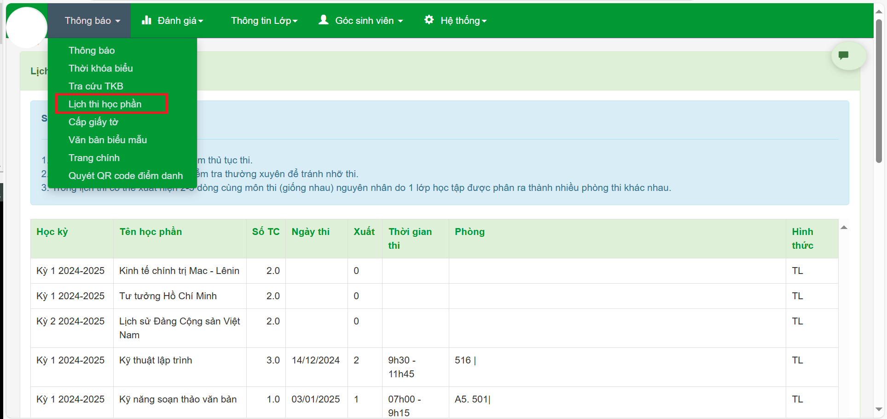

HƯỚNG DẪN TÂN SINH VIÊN
Thông Tin Đăng Nhập Mặc Định
Sinh viên truy cập website theo IDSV và mật khẩu mặc định:
- IDSV (Mã số sinh viên): Có trên phiếu thu học phí.
- Mật khẩu mặc định: ngày/tháng/năm sinh.
- Tên đăng nhập: 55500
- Mật khẩu: 03/09/2002 (Lưu ý: nhập đầy đủ cả dấu "/")
Bước 1: Thực Hiện Khảo Sát
Nhà trường tổ chức khảo sát tân sinh viên để nắm bắt được năng khiếu, hoàn cảnh gia đình, và ý kiến về quy trình nhập học. Bạn truy cập website theo IDSV và mật khẩu mặc định để thực hiện khảo sát trên máy tính tại trang https://sinhvien.donga.edu.vn.
- Thực hiện đăng nhập:
Các Phần Khảo Sát:
Khảo sát gồm 5 phần chính. Bạn hãy thực hiện lần lượt từng phần theo hướng dẫn sau:
Phần 1: Về Năng Khiếu Để Tham Gia Các Câu Lạc Bộ
Để giúp sinh viên có sân chơi thể hiện tài năng và phát huy năng khiếu, tạo niềm vui, hứng khởi trong học tập, bạn hãy chọn và mô tả các năng khiếu của mình trong phần này.
Phần 2: Về Hoàn Cảnh Gia Đình Sinh Viên
Bạn hãy cung cấp các thông tin về hoàn cảnh gia đình để nhà trường có thể nắm bắt và hỗ trợ kịp thời khi cần thiết.
Phần 3: Về Quy Trình Nhập Học
Trong phần này, bạn sẽ đưa ra ý kiến về quy trình tiếp đón, hướng dẫn hồ sơ, làm thủ tục trên máy và hướng dẫn sử dụng phần mềm. Hãy đánh giá các tiêu chí theo mức độ hài lòng của bản thân.
Phần 4: Các Thông Tin Khác
Ở phần này, bạn hãy đánh số thứ tự từ 1 đến 3 cho ba kênh thông tin giúp bạn biết đến trường Đại học Đông Á, với 1 là kênh đầu tiên bạn biết đến. Các ô còn lại hãy để trống.
Phần 5: Ngoại Ngữ
Ngoài năng lực chuyên môn, ngoại ngữ là yếu tố quan trọng giúp sinh viên nổi bật trước nhà tuyển dụng. Vì vậy, sinh viên các ngành không chuyên ngữ nên ưu tiên học ngoại ngữ trong 1-2 năm đầu để rèn luyện kỹ năng và mở rộng cơ hội thực tập, làm việc trong và ngoài nước. Nhà trường khuyến khích sinh viên chọn tiếng Anh và tiếng Nhật để có thêm cơ hội thực tập và làm việc tại nước ngoài sau này.
Nhà trường sẽ tổ chức khảo sát ngoại ngữ đầu vào nhằm đánh giá năng lực thực tế của từng sinh viên. Kết quả khảo sát sẽ được dùng để xếp lớp phù hợp với năng lực của bạn, tạo môi trường học tập hiệu quả.
Lệ phí khảo sát là miễn phí. Bài khảo sát bao gồm 40 câu hỏi trắc nghiệm trong vòng 30 phút. Sinh viên có thể chọn tham gia vào một trong các buổi khảo sát sau: sáng hoặc chiều 04/09 và sáng hoặc chiều 05/09.
Sau khi chọn thời gian, hãy quét mã QR để tham gia vào nhóm Zalo của trung tâm ngoại ngữ để nhận được hướng dẫn cụ thể. Trung tâm sẽ dựa vào số lượng sinh viên trong nhóm để tổ chức khảo sát trực tiếp tại Phân hiệu.
Đối với những sinh viên đã có chứng chỉ ngoại ngữ quốc tế, bạn vẫn có thể nộp chứng chỉ đó cho nhà trường để được xét miễn giảm các học phần ngoại ngữ không chuyên.
Cuối cùng, sau khi hoàn thành tất cả các phần, bạn hãy nhấn nút Lưu để hoàn thành.
Bước 2: Xem Thông Tin Trên Website
Sinh viên cần xem thường xuyên các thông tin quan trọng tại Cổng thông tin sinh viên https://my.uda.edu.vn để không bỏ lỡ bất kỳ thông báo nào từ nhà trường và quản lý tốt quá trình học tập của mình.
Hướng dẫn xem thông tin trên trang MyUDA
Sau khi đăng nhập thành công, bạn có thể dễ dàng truy cập và kiểm tra các nội dung sau:
- Xem Thông báo của nhà trường: Tại trang chủ, bạn có thể xem các thông báo mới nhất từ trường, bao gồm các thông tin về học vụ, sự kiện, hay các hoạt động ngoại khóa.
- Xem Thời khoá biểu: Đây là mục giúp bạn tra cứu thời gian và địa điểm học của từng môn. Hãy thường xuyên kiểm tra để nắm rõ lịch học và sắp xếp thời gian biểu cá nhân một cách hợp lý.
- Xem Lịch thi học phần: Nắm rõ lịch thi cuối kỳ là rất quan trọng. Bạn có thể xem lịch thi của các học phần đã đăng ký để chuẩn bị ôn tập hiệu quả nhất. 
- Đăng ký giấy tờ và xem Văn bản biểu mẫu: Bạn có thể dễ dàng yêu cầu các loại giấy tờ cần thiết như giấy xác nhận sinh viên, tạm hoãn nghĩa vụ quân sự. Ngoài ra, bạn cũng có thể tìm thấy các biểu mẫu đơn từ nhà trường để phục vụ cho các thủ tục hành chính.
- Cập nhật và kiểm tra Thông tin cá nhân: Đảm bảo thông tin cá nhân của bạn luôn chính xác. Nếu có bất kỳ sai sót nào, bạn có thể liên hệ phòng đào tạo để được hỗ trợ cập nhật kịp thời.
- Xem Kết quả học tập: Theo dõi kết quả học tập từng học kỳ để biết được điểm số, điểm rèn luyện và tiến độ học tập của mình.
- Xem Học phí: Tại đây, bạn sẽ tìm thấy thông tin chi tiết về các khoản học phí, số nợ công, và các hình thức thanh toán thuận tiện.
- Hướng dẫn Đăng kí học lại: Nếu không may bạn phải học lại một môn học nào đó, mục này sẽ cung cấp đầy đủ thông tin và quy trình đăng ký.
- Xem Nội dung các học phần đào tạo: Tìm hiểu chi tiết về các học phần bạn sẽ học trong chương trình đào tạo, bao gồm số tín chỉ, lý thuyết và thực hành.
Bước 3: Đăng Ký Giấy Xác Nhận Trực Tuyến
Áp dụng cho các trường hợp cần giấy xác nhận để vay vốn sinh viên, tạm hoãn nghĩa vụ quân sự,...
Hướng dẫn đăng ký giấy xác nhận hoãn nghĩa vụ quân sự
Sinh viên thực hiện theo các bước sau để đăng ký giấy xác nhận hoãn nghĩa vụ quân sự:
- Truy cập mục "Cấp giấy tờ": Trên trang chủ của my.uda.edu.vn, bạn vào mục Thông tin cá nhân (hoặc tương tự) và chọn Cấp giấy tờ trong menu thả xuống.
- Chọn "Đăng ký nhận giấy": Trong trang cấp giấy tờ, hãy tìm và nhấn vào nút Đăng ký nhận giấy.
- Chọn mẫu giấy cần thiết: Một danh sách các mẫu giấy tờ sẽ hiện ra. Bạn cần tìm và bấm vào nút xem ở dòng Xác nhận tạm hoãn NVQS cho nam sinh viên.
- Kiểm tra thông tin cá nhân: Một trang sẽ hiện ra để bạn kiểm tra lại thông tin cá nhân. Hãy đảm bảo mọi thông tin đã chính xác, sau đó nhấn vào nút Tiếp theo.
- Điền thông tin và hoàn tất đăng ký: Tại trang đăng ký cuối cùng, bạn điền Lý do sử dụng (ví dụ: "Xin hoãn nghĩa vụ quân sự để đi học") và chọn Phương thức nhận. Sau đó, bấm nút Gửi đăng ký để hoàn tất.
Bước 4: Tham Gia Kênh Zalo & Fanpage
1. Nhóm Zalo Chung K25 (Bắt buộc)
Kênh thông tin chính thức và quan trọng nhất cho toàn bộ sinh viên K25.
2. Các Nhóm Chức Năng

3. Các Câu Lạc Bộ - Đội Nhóm
4. Kênh Thông Tin Fanpage
Cập nhật tin tức chính thức từ Phân hiệu.
Không gian giao lưu, chia sẻ của sinh viên.
Bước 5: Xác Nhận Nhập Học Trên Cổng Bộ GD&ĐT
Đã đăng ký nguyện vọng vào trường Đại học Đông Á trước đó, hãy thực hiện xác nhận theo hướng dẫn sau. Đối với những bạn chưa đăng ký nguyện vọng vào trường ĐH Đông Á trước đây trên hệ thống của Bộ GD&ĐT, nhà trường sẽ chuyển các bạn vào đợt đăng ký nguyện vọng bổ sung sau và không cần thực hiện bước 5 này.
Đây là bước bắt buộc để hoàn tất thủ tục nhập học tại https://thisinh.thitotnghiepthpt.edu.vn
Hướng dẫn xác nhận nhập học trực tuyến
Để xác nhận nhập học, sinh viên truy cập vào Cổng thông tin của Bộ Giáo dục và Đào tạo, sau đó thực hiện các bước sau:
-
Đăng nhập: Tại trang đăng nhập, bạn cần điền đầy đủ thông tin vào các ô sau:
- Số CCCD/CMND/ĐDCN: Nhập số Căn cước công dân hoặc chứng minh thư của bạn.
- Mã đăng nhập: Nhập mã đăng nhập đã được cấp.
- Mã xác nhận: Nhập mã captcha hiển thị trên màn hình.
- Xác nhận nhập học: Sau khi đăng nhập thành công, bạn sẽ được chuyển đến trang xác nhận nhập học. Tại đây, bạn tiến hành xác nhận và hoàn tất thủ tục theo hướng dẫn của hệ thống.